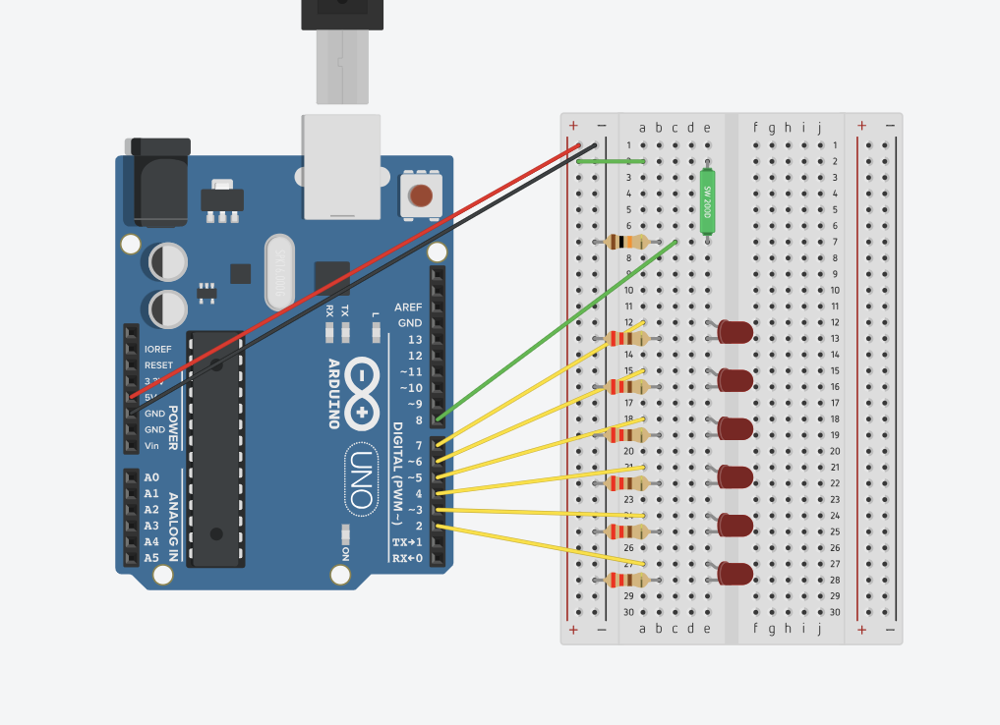
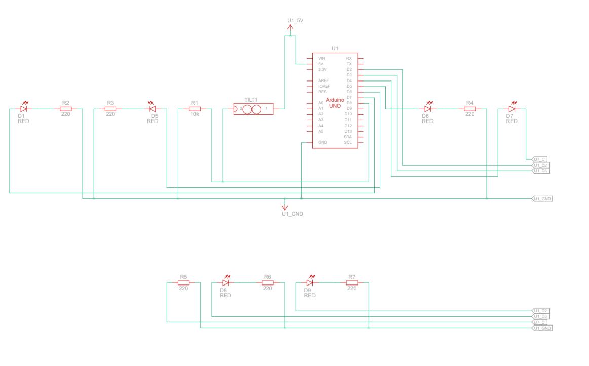
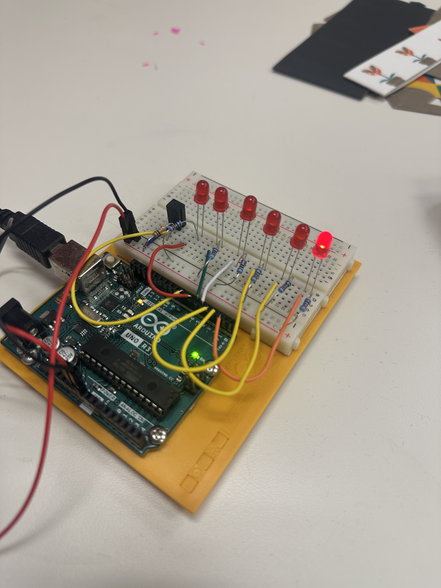
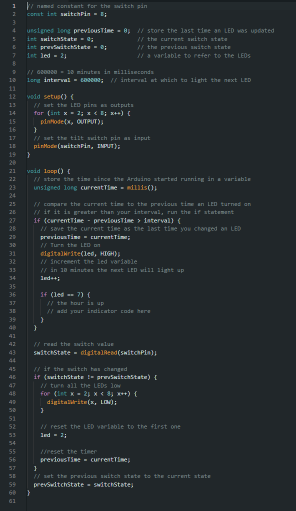

Arduino HW 8 - Digital Hourglass
IGME 470
The Digital Hourglass assignment uses multiple LEDs which light up in succession over time, simulating an hourglass. This project introduces the concept of using a tilt sensor to detect orientation changes. Similar to flipping an hourglass to reset the time, the tilt sensor is used to restart the timer.
As time passes, the LEDs light up one by one until all are illuminated. When you tilt the device, the tilt sensor detects the change and resets the timer, turning off all LEDs to start the countdown again.



The parts used:
- 1x Arduino Uno R3
- 1x Tilt Sensor
- 1x 10 kΩ Resistor
- 6x 220 Ω Resistors
- 6x Red LEDs

The circuit uses a tilt sensor connected to a digital input pin to detect when the device is tilted. The Arduino code monitors the tilt sensor and manages a timer that lights up each LED sequentially.
When the tilt sensor detects a change in orientation, the code resets the timer, turning off all LEDs. This creates the so-called "Digital Hourglass".
Demo